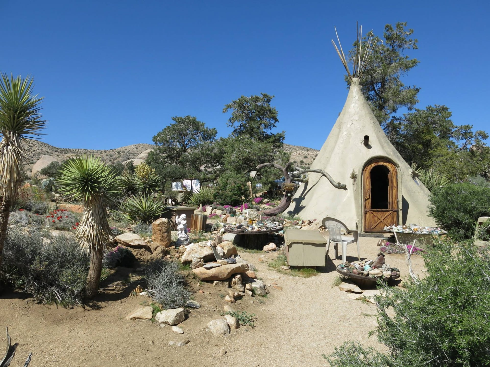
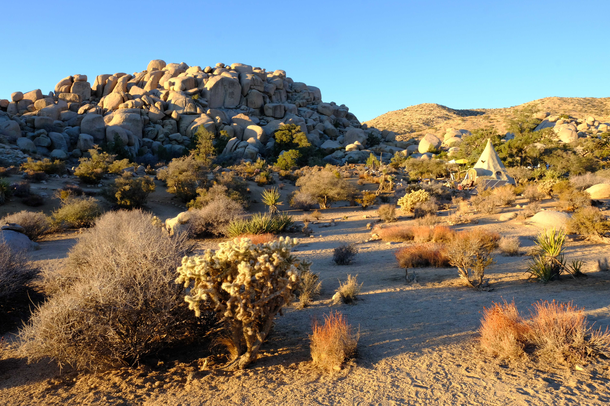
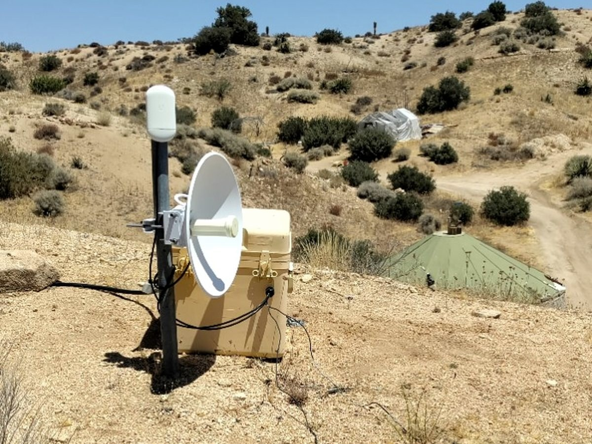
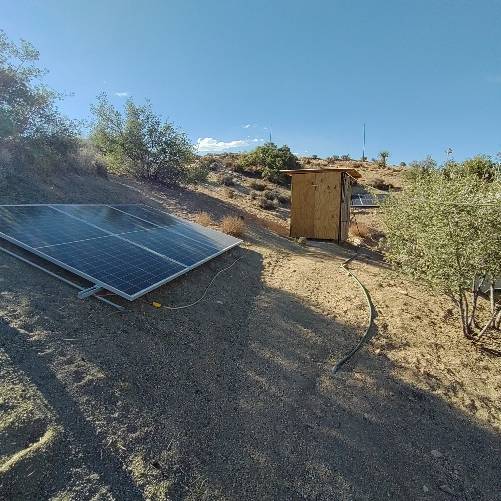
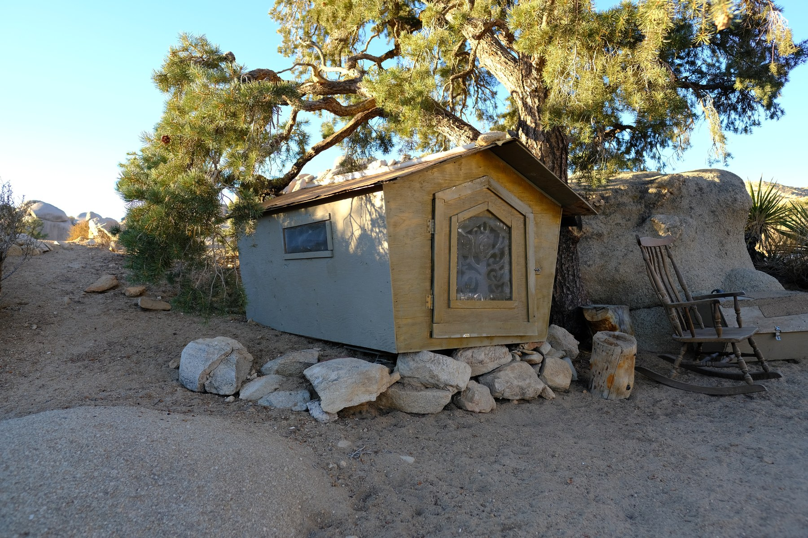
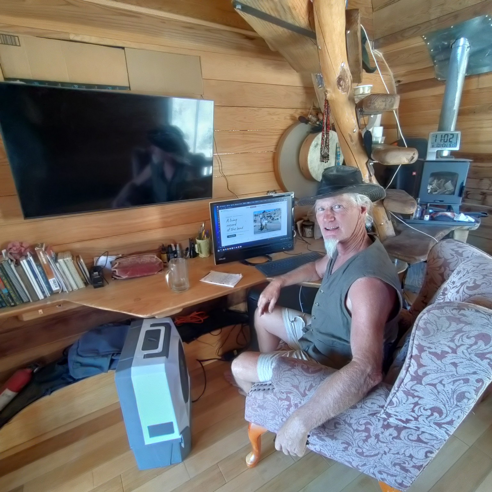

Current place
Boulder Gardens
The sanctuary itself: land, people, shelters, water, energy, ecology, and everyday life among the boulders.
Enter Boulder Gardens →
Places · People · Land · Building · Exploration
A record of places, projects, communities, fieldwork, and practical experiments in living with the land.
Boulder Gardens, Mojave Desert — a place to live, observe, build, experiment, and keep paying attention.
01
It is a working archive: places I have lived, people I have known, projects I have built, field observations, old photographs, experiments that worked, and some that did not.
02
Three continuing records

Current place
The sanctuary itself: land, people, shelters, water, energy, ecology, and everyday life among the boulders.
Enter Boulder Gardens →
Field record
Short visual reports drawn from the deeper field record: systems, repairs, observations, measurements, and experiments.
Browse the field record →
Earlier chapter · Upper Ojai
A record of permaculture design, natural building, ecology, water, food systems, community life, and lessons from a five-and-a-half-acre intentional community.
Visit Full Circle Paradise →03
Current place
A desert sanctuary among boulders, washes, native plants, improvised structures, old trails, water systems, solar equipment, and a long human story.
I am interested in the land as something to read directly: by walking it, mapping it, repairing things, watching water, noticing wildlife, and seeing how human systems fit—or fail to fit—into the larger place.
The public record will grow from the same working archive used for the Fieldstation: photographs, measurements, observations, maps, diagrams, and concise field reports.
Read the Field Reports →04
Observations from the work itself
Short, visual records of the systems, repairs, observations, and experiments that make up daily work at Boulder Gardens.
Tanks, collection, depth sensing, seasonal observations, and the problem of living carefully in a dry place.
Off-grid solar, batteries, charge controllers, system limits, repairs, and actual measured performance.
Long-distance Wi-Fi, Ethernet, mesh radio, relays, and the infrastructure that connects a scattered desert site.
ESP32 devices, Home Assistant, radio receivers, environmental sensors, and a growing observational record.
The dedicated Boulder Gardens Field Reports site will use this same Naturalist Journal visual language.
Open the current local reports →Recently in the field

FR001 · Energy
Documenting the array, charge controller, battery system, real-world performance, repairs, and limits.

FR009 · Shelter
A tiny one-person sleeping shelter measured as-built and recorded as part of the evolving site archive.
05
Life archive
The present work did not appear all at once. It grew out of places, communities, travel, teaching, practical building, and long experiments in how to live.
06
About

I’ve been part of intentional communities, pilgrim networks, solarpunk dreamers, and desert dwellers.
My compass points toward connection, dignity, and shared wisdom — with laughter, land, and spirit at the center.
This site is not intended to sell a service or build a personal brand. It is here to explain what I do, preserve the work, and connect the different chapters of a life that still feels very much in progress.